HI, THIS IS MY LIFE EXPERIENCE.
UiTM:
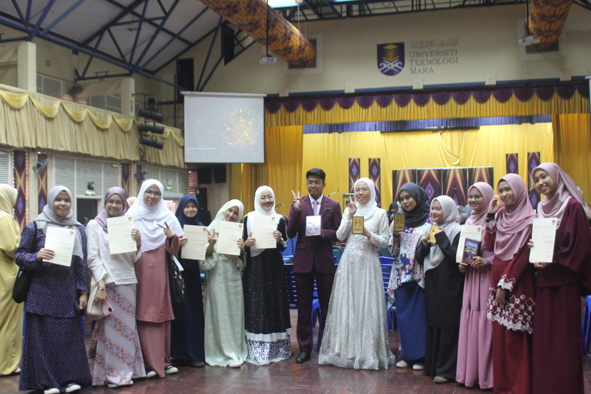
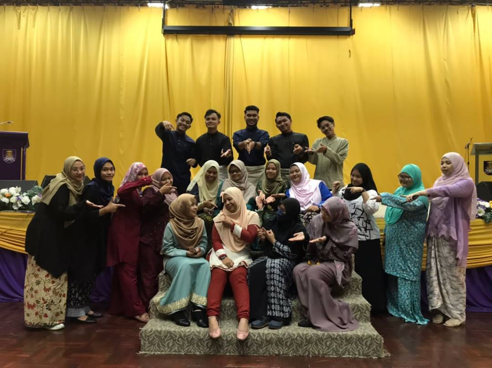
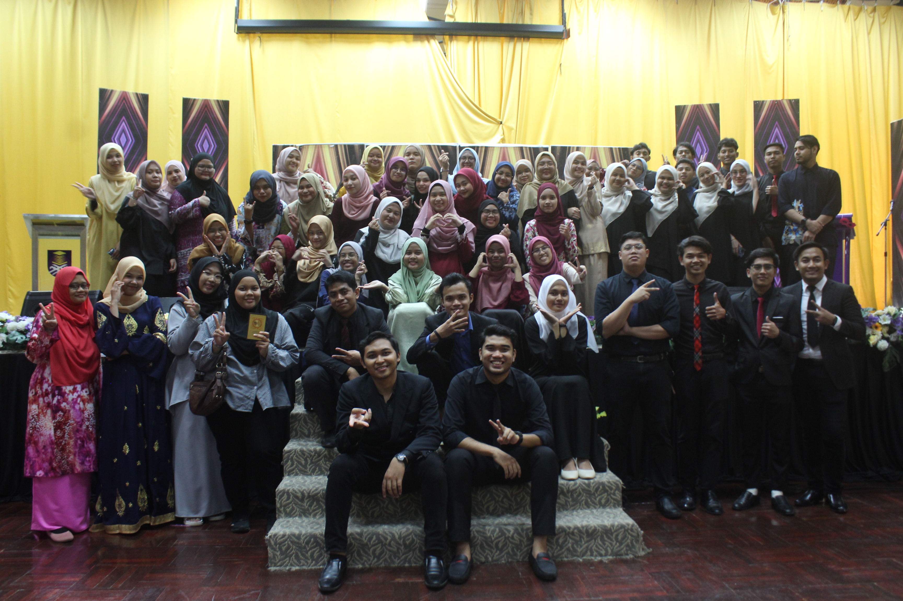
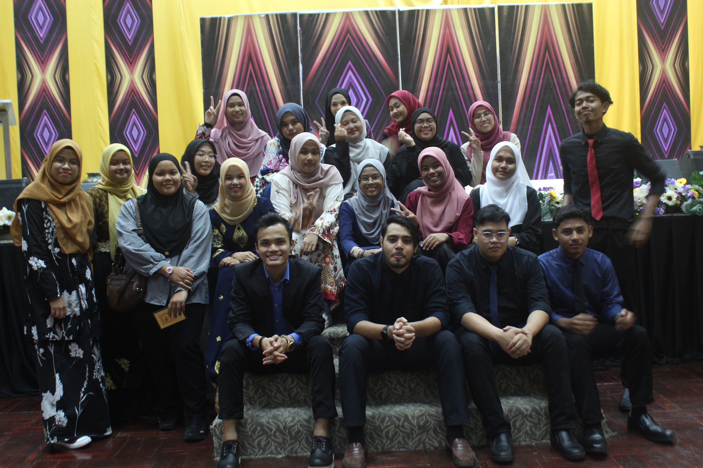
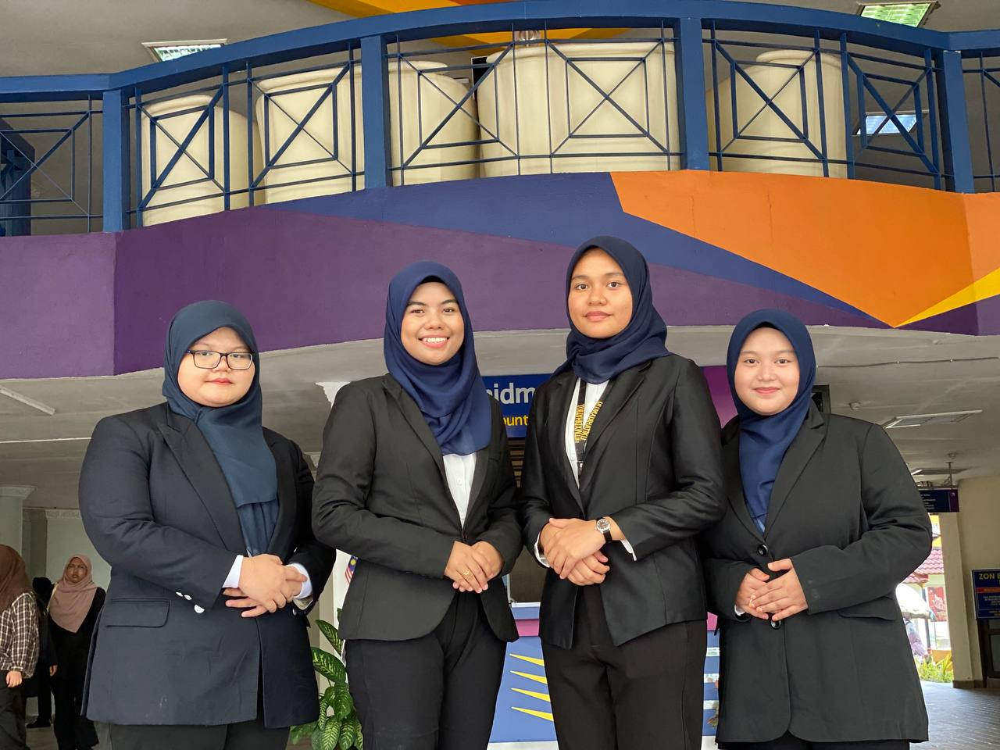
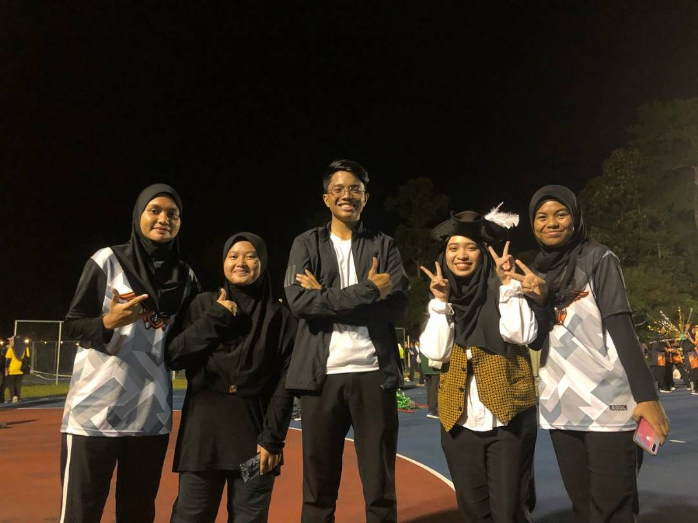
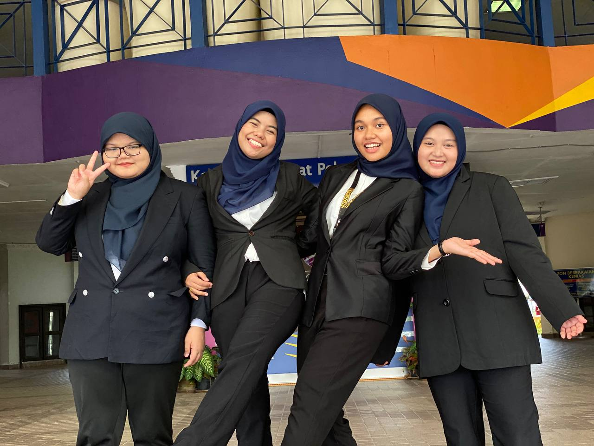
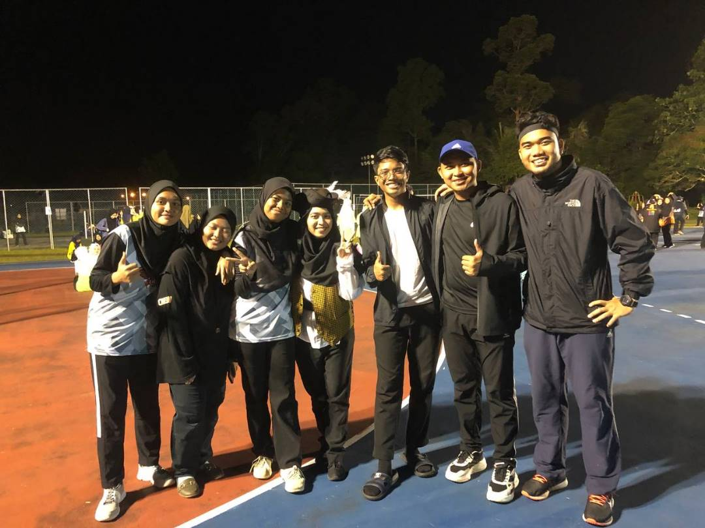
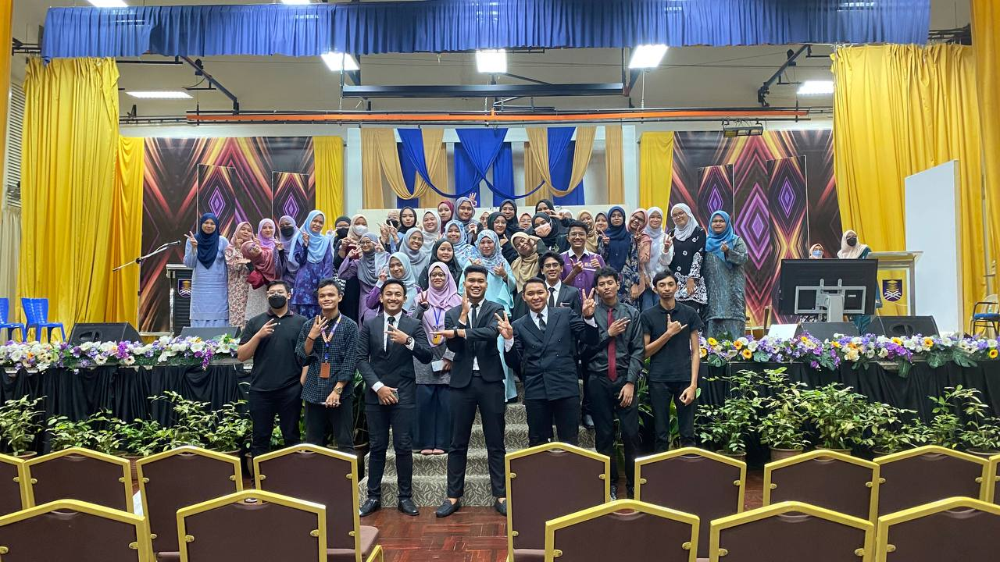
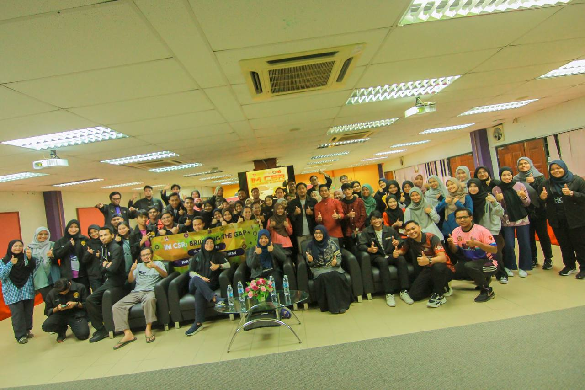
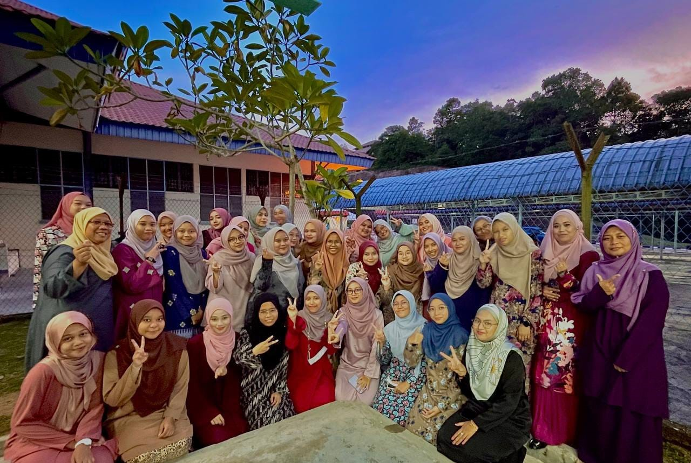
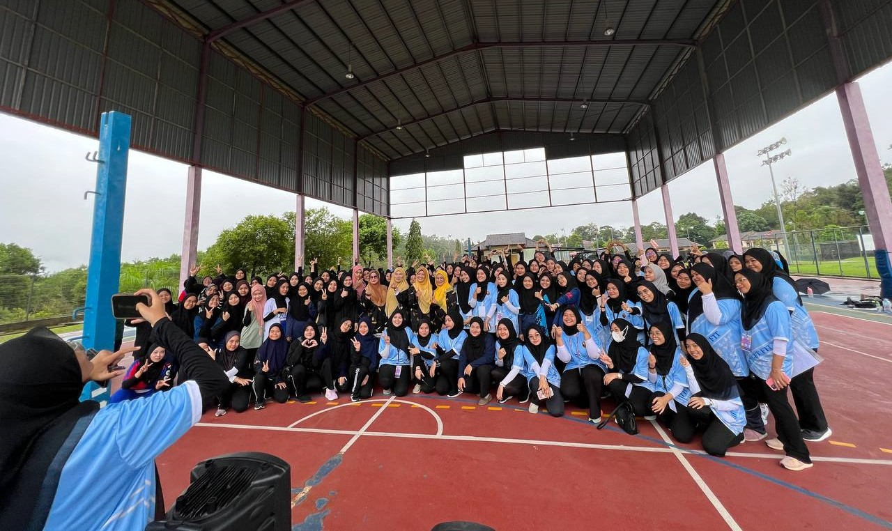
❮
❯
After completing SPM at Maahad Saniah Pasir Puteh, I continued my studies at
Universiti Teknologi MARA Kelantan Branch (Machang Campus). The field I am involved in is a Diploma in
Information Management. To be honest, I didn't know about this course when I was in school. However,
when studying it at university, it is a very interesting course that requires various skills.
For example, management skills, skills in using technology and so on. In addition, I am also active at
UiTM. I am the Deputy President of the Association of Information Scientists and also the Programs and
Activities Exco for the Dato' Onn College Representative Committee. Both of these associations are very
important to look after the welfare of students at UiTM. I learned a lot through association.
Most students only come to the institution to study academically. However, I think that being active in
non-academic fields is also important for someone to upgrade their personal skills and find experience.
Through association, we can learn how to manage various documents, procedures for organizing activities,
how to control emotions while working under pressure and so on. Finally, students need to be balanced in
terms of academics and skills.
Non Governmental Organization:
I am also a volunteer of a non-governmental organization in Selangor, namely
Kota Raja Care. This KRC is an organization that is active in helping the Kota Raja community. Among
their achievements are being involved in the Selangor flood relief mission, giving birth to entrepreneurs
consisting of asnaf, collaborating with the homeless community in Chow Kit Kuala Lumpur and many more.
Not to be forgotten, KRC is a non-governmental organization that is very important to youth and school
students. KRC has held tuition for Year 5 and 6 students who will sit for the UPSR exam and Form 4 and 5
students in preparation for SPM. For the youth, KRC has provided financial assistance and also business
courses for free. Not to be forgotten, KRC has created a free ambulance that serves the surrounding area.
The effort to create this ambulance has been fully supported by Shah Alam Hospital. The decision to join
this NGO was my own decision, in line with my interests and ambitions.